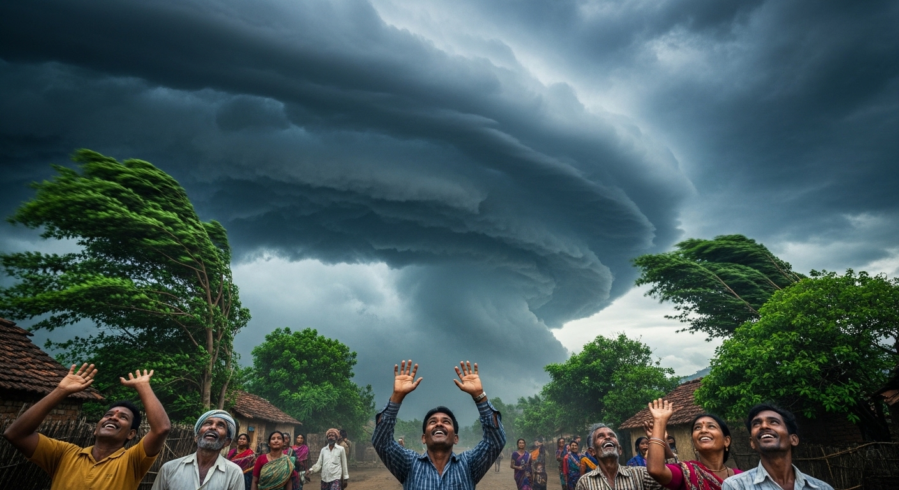
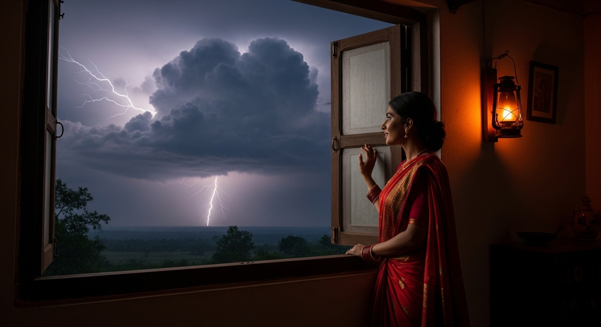

कवि: सर्वेश्वर दयाल सक्सेना
कविता का स्वर: प्रकृति का मानवीकरण और ग्रामीण परिवेश
सारांश: 'मेघ आए' कविता में कवि ने वर्षा ऋतु के आने का अत्यंत सजीव और सुंदर चित्रण किया है। कवि ने मानवीकरण अलंकार का प्रयोग करते हुए बादलों (मेघों) को शहर से गाँव आए हुए किसी सजे-धजे दामाद (पाहुन) के रूप में दर्शाया है। जिस प्रकार दामाद के गाँव में आने पर पूरे गाँव में उत्साह, उमंग और हलचल मच जाती है, ठीक उसी प्रकार गर्मी के बाद जब काले बादल सज-धज कर आसमान में घिरते हैं, तो पूरी प्रकृति—हवा, पेड़, धूल, लताएँ, नदियाँ और तालाब—खुशी से झूम उठते हैं और उनका स्वागत करते हैं।
शब्दार्थ: मेघ = बादल; बन-ठन के = सज-धज कर; बयार = हवा; पाहुन = मेहमान/दामाद।
प्रसंग: इस पद्यांश में कवि आसमान में काले बादलों के छाने और तेज़ हवा चलने का सुंदर मानवीकरण कर रहे हैं।
भावार्थ: कवि कहते हैं कि आसमान में काले-काले बादल इस तरह घिर आए हैं, मानो कोई शहरी मेहमान (दामाद) सज-धज कर (बन-ठन कर) गाँव में आया हो। बादलों के आने की सूचना देने के लिए उनके आगे-आगे ठंडी हवा (बयार) मानो नाचती और गाती हुई चल रही है। बादलों (रूपी मेहमान) को देखने के उत्साह में गाँव की हर गली में लोगों ने अपने-अपने घरों के दरवाज़े और खिड़कियाँ खोल दी हैं, बिल्कुल वैसे ही जैसे गाँव के लोग शहर से आए दामाद को देखने के लिए उत्सुक होकर खिड़कियों से झाँकने लगते हैं। आज मेघ बड़े ही सज-धज कर आए हैं।
शब्दार्थ: गरदन उचकाए = गरदन ऊँची करके (उत्सुकतावश); बाँकी चितवन = तिरछी नज़र; ठिठकी = रुकी/हैरान हुई।
प्रसंग: कवि बता रहे हैं कि बादलों के आने पर प्रकृति के अन्य अंगों (पेड़, आँधी, धूल और नदी) में कैसी प्रतिक्रिया होती है।
भावार्थ: हवा के तेज़ झोंकों से पेड़ कभी झुक जाते हैं और कभी सीधे हो जाते हैं; ऐसा लगता है मानो गाँव के लोग (पेड़) अपनी गरदन उचका-उचका कर मेहमान को देखने की कोशिश कर रहे हों। अचानक तेज़ आँधी चलने लगती है और धूल उड़ने लगती है; इसे देखकर ऐसा प्रतीत होता है मानो कोई गाँव की किशोरी घबराकर अपना घाघरा उठाकर दौड़ रही हो। हवा के कारण नदी के पानी में लहरें उठने लगती हैं; इसे देखकर कवि कल्पना करते हैं कि मानो गाँव की कोई बहू मेघ रूपी दामाद को देखकर थोड़ी ठिठक गई हो, और घूँघट सरका कर तिरछी नज़रों (बाँकी चितवन) से उसे निहार रही हो। इस प्रकार मेघ बड़े सज-धज कर आए हैं।
शब्दार्थ: जुहार की = आदरपूर्वक नमस्कार किया; सुधि लीन्हीं = याद किया; अकुलाई = व्याकुल/प्यासी; ओट हो किवार की = दरवाज़े के पीछे छिपकर; हरसाया = खुश हुआ; ताल = तालाब।
प्रसंग: इस पद्यांश में गाँव के बुजुर्ग (पीपल), विरहिणी पत्नी (लता) और सेवक (तालाब) द्वारा मेघ का स्वागत किया गया है।
भावार्थ: पीपल का पेड़ गाँव में सबसे पुराना और बड़ा होता है, इसलिए हवा चलने पर जब पीपल झुका, तो ऐसा लगा मानो गाँव के सबसे बुजुर्ग व्यक्ति ने आगे बढ़कर दामाद (मेघ) का झुककर आदरपूर्वक स्वागत (जुहार) किया हो। गर्मी से व्याकुल (अकुलाई) प्यासी लता रूपी नायिका ने दरवाज़े की ओट (पीछे) छिपकर उलाहना देते हुए मेघ से कहा कि "तुमने तो पूरे एक साल (बरस) बाद हमारी सुध ली है (याद किया है)।" मेहमान के आने की खुशी में तालाब पानी से छलकने लगा; मानो परिवार का कोई सदस्य या सेवक दामाद के चरण धोने के लिए पानी से भरी परात ले आया हो। आज बादल रूपी पाहुन पूरे सज-धज कर आए हैं।
शब्दार्थ: क्षितिज = जहाँ धरती और आकाश मिलते हुए प्रतीत होते हैं; अटारी = छत/महल; दामिनि = बिजली; भरम = भ्रम/संदेह; अश्रु ढरके = आँसू बह निकले।
प्रसंग: अंत में बादलों और बिजली के मिलन तथा मूसलाधार बारिश होने का मनमोहक वर्णन किया गया है।
भावार्थ: क्षितिज (आकाश) रूपी ऊँची छत (अटारी) पर काले बादल पूरी तरह छा गए हैं और उनमें बिजली (दामिनि) चमकने लगी है। बिजली की चमक को देखकर ऐसा लगता है मानो लता रूपी पत्नी का यह भ्रम दूर हो गया हो कि उसका प्रियतम (मेघ) नहीं आएगा। वह कहती है कि "मुझे क्षमा कर दो, मेरे मन में जो संदेह था कि तुम नहीं आओगे, वह अब दूर हो गया है।" अंततः उन दोनों का मिलन हो जाता है और उनके प्रेम तथा खुशी का बाँध टूट पड़ता है, जो झमाझम बारिश के रूप में धरती पर गिरने लगता है। मानों मिलन की खुशी में दोनों की आँखों से खुशी के आँसू बह निकले हों। इस प्रकार, बादल पूरे गाँव में खुशी लाते हुए सज-धज कर आए हैं।
